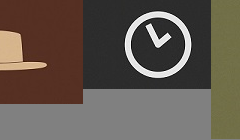

最后更新时间:
border-image相关属性问题
前言: 本文再看过本文底部参考文章的链接后，对这个CSS属性有了一定的了解
但个人觉得有些地方还是显得连篇累牍，有些很基本的概念解释起来太多了
反而让读者有点概念混淆，当然，我也不是说原作者写的不好，原作者对于CSS理解非我所能及
我也从他身上学习了很多东西，所以，学习了之后我要用自己的话说出来。
该属性的兼容性
该属性是CSS3属性中的一员，一些低端浏览器就无缘一见了
适用于：IE11+，Firefox3.5+，chrome或Safari3+浏览器。
图片，剪裁位置，重复性
这是一条标准border-image:url(border.png) 27 repeat

返回首页
|
参考文章